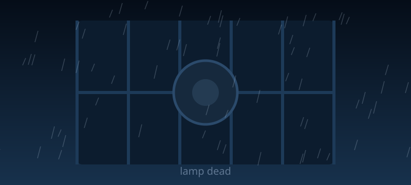

Top of the Tower
You climb all 112 stairs and arrive soaked through and puffing. The lamp's main fuse has burnt out and the glass is already cold to touch. Through the rain you can just make out a small fishing boat drifting sideways towards the rocks. Then you notice the other light. Far out past the reef, much further than any boat has business being, something is glowing green.